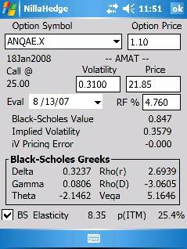
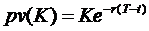
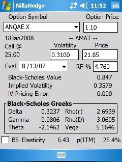

The Option Analyzer dialog enables you to experiment with values for the risk free rate, option price, stock price, and stock volatility to better understand an option’s sensitivity to changing market conditions. There is a subtle difference in the way that the Option Symbol combo-box works vs. how that control works in the Option Definition Dialog, so we’ll address that immediately.The Option Symbol combo-box in an analyzer dialog doesn’t allow you to create a new symbol as you can do in the Option Definition Dialog. All you can do is select one of the preexisting option symbols. Given that, we decided to always load the first option symbol found, so you instantly have meaningful output to review when you open the Option Analyzer.
The Option Price edit box is a window on the database’s stored value for the option price. If you change the option price here, the new value will be saved in the option definition when you change option symbols or quit the dialog. If you have the appropriate save confirmation preferences enabled, either of those actions will cause a confirmation dialog to post asking permission to update the database.
Immediately below the Option Symbol combo-box, you can see
several items that summarize the option definition. The expiration date, whether it’s a put or a
call, the strike price, and the symbol of the underlying stock (surrounded by
dashes). In the example above, we can
see that ANQAE.X is a call option on Applied Materials Inc. (NYSE symbol =
‘AMAT’), struck at 25.0, expiring on
The Stock Volatility edit box is a window on the database’s stored value for the underlying stock’s volatility. If you change the volatility here, the new value will be saved in the stock definition when you change option symbols or quit the dialog. If you have the appropriate save confirmation preferences enabled, either of those actions will cause a confirmation dialog to post asking permission to update the database.
The Stock Price edit box is a window on the database’s stored value for the underlying stock’s market price. If you change the stock price here, the new value will be saved in the stock definition when you change option symbols or quit the dialog. If you have the appropriate save confirmation preferences enabled, either of those actions will cause a confirmation dialog to post asking permission to update the database.
The Risk Free Rate edit box displays the currently stored value for the risk free rate of interest. It’s expressed as a percentage with a default value of 3%; here 4.76% is used. The risk free rate can be computed in the YieldCurveFitter (a separate tool) or you can set it manually here. It’s a crucial quantity in valuing options, also used in numerous other NillaHedge tools. If you have created option positions and you want a realistic assessment of the value of those positions, you should always review and possibly modify the value of the risk free rate in the Option Analyzer, in one of the Explorer dialogs, or by using the Yield Curve Fitter prior to valuing any option positions.
The Black-Scholes value is discussed in the Glossary, so we won’t review the details here – it’s an analytical solution to option valuation that accounts for the current price for the underlying stock, its volatility, and the risk free rate of interest. Variations on the theme account for discrete dividends or model dividends as a continuous yield. NillaHedge discounts the stock price with the present value of any dividends rather than resorting to a continuous yield approach. This seems to model market behavior more effectively than the continuous dividend yield model, especially for options with expirations less than one year.
Implied volatility is defined in the Glossary, so we won’t delve deeply into it here, but briefly volatility represents the standard deviation of returns on the underlying stock over a year. Volatility is a crucial quantity used to assess option value and because of that role, it can be estimated given the other market conditions, namely the current value of the risk free rate, the current market price of the underlying stock, and the current market price of an option on that underlying stock. Volatility is best estimated using options which are at or near the money and not overly distant from expiration. Options that are far from the money and/or greater than a year from expiry tend to incorporate secondary risks not accounted for in nearer term, nearer the money options. Both situations usually result in pushing the implied volatility higher than stock returns warrant. It’s relatively rare to see a near term volatility higher than longer term volatilities.
Calculating implied volatility is an iterative process, which may fail to converge on a satisfactory solution. The degree to which a solution is satisfactory is given by the pricing error associated with the implied volatility. Ideally, this should be a vanishingly small number, as close to zero as possible. When the implied volatility pricing error is negative, it means that the implied volatility produced a market price lower than the specified market price for the option. Conversely, when iV pricing error is positive, it means that the implied volatility produced a market price above the specified market price.
When the option is ‘rationally’ priced, implied volatility
will generally converge and produce little or no pricing error. So pricing error can be an indication that
options are incorrectly priced. The only
way to know for sure is to look at the relationship between put and call prices
at the same strike. The market is
correctly pricing options when the following relationship holds: , or more accurately , where C is the
call price, P is the put price, S is the stock price, and 
Unfortunately, irrational prices aren’t the only situation that might prevent convergence. When the time to expiry is relatively short and the option is at or near the money (the underlying stock price is very close to the option’s strike price) the volatility surface will be very steep, so implied volatility will have difficulty settling. The implied volatility calculator detects situations involving mispricing and instability and bails out early, indicating the smallest pricing error found among the volatilities tested. It doesn’t communicate why it bailed out, but if expiry isn’t near at hand and the option is not near the money, you should consider the possibility that the current option price represents an arbitrage opportunity. Black-Scholes isn’t a perfect model of market behavior – some researchers have estimated that options prices vs. their associated Black-Scholes value typically differ by 2% or more, but an implied volatility pricing error greater than that should definitely cast doubt on the implied volatility reported. We considered simply clearing the volatility or reporting “~” in these cases and not bothering to report the pricing error at all, but ultimately decided to keep the user in the loop, since the 2% figure itself is somewhat open to debate.

Briefly, the Black-Scholes greeks indicate the option’s sensitivity to changes in the risk free rate (rho(r)), the passage of time (theta), as well as the underlying stock price (delta), dividends (rho(D)), and volatility (vega). Derivative information includes gamma, elasticity, and the probability of closing In-The-Money (p(ITM)). Each of the Black-Scholes greeks and derived quantities are discussed in the Glossary.The BS (for Black-Scholes) check box in the lower left corner allows you to see what elasticity would be if scaled by the option’s market price (unchecked), rather than its Black-Scholes value (checked). It is always checked when the OptionAnalyzer is first posted since that represents the true expression for elasticity. In this example, the gap between market price and Black-Scholes value is substantial, so the elasticity also changes substantially.
It is quite unusual for such a large gap to exist between the market value and the Black-Scholes value for an option with only four months to expiry. In this example, you get the same valuation whether Applied Material’s $0.11 dividend (with ex-dividend date 14 August 2007) is entered in the Stock Definition or not, but this is just one potential source of valuation error. We addressed volatility mispricing earlier – note that vega is substantial here, so under or over-estimating of the volatility in a small way will produce large deviations away from the option’s ‘true’ market value. At this point in time, Applied Materials has almost doubled in price in twelve months, so opinions regarding its volatility tend to run towards the high side.
Another source of error is built into Black-Scholes itself – it derives from the fact that Black-Scholes assumes that options can only be converted to stock or cash on the option’s expiration date, so called European style options. In contrast, traded options generally allow for exercise on any date up to and including the expiration date, so called American style options. In efficient markets, it is generally suboptimal to early exercise a call, but puts on underlying stocks that don’t pay dividends can deviate sufficiently from the Black-Scholes value to make early exercise a good bet (capture profits now with relatively low risk of the underlying stock dropping further than the time value of money now invested elsewhere. Over a short period, this is likely to be a very small premium, but it grows with distance from expiry. Unfortunately, there is no closed form solution for the early exercise premium with an arbitrary exercise date. Closed form solutions exist for what are called Bermudan style options – options that can be exercised on one of several dates specified in the contract. Assessing the premium typically requires a multivariate combination of Bermudan valuations or a much more time consuming binomial expansion - a sort of discrete time approximation that produces better and better accuracy as the binomial tree populates price-time space. Trading firms with massive computer power evaluate as many as 10,000 node binomial trees in order to accurately determine option value, including any early exercise premium. Therefore, it should not surprise you to find market prices in excess of the Black-Scholes value, but Black-Scholes establishes a very reasonable low water mark, what might be considered to be the option’s blue book value (assuming you got the volatility right). As you gain experience, you will get a sense for how the early exercise premium scales with time to expiry.